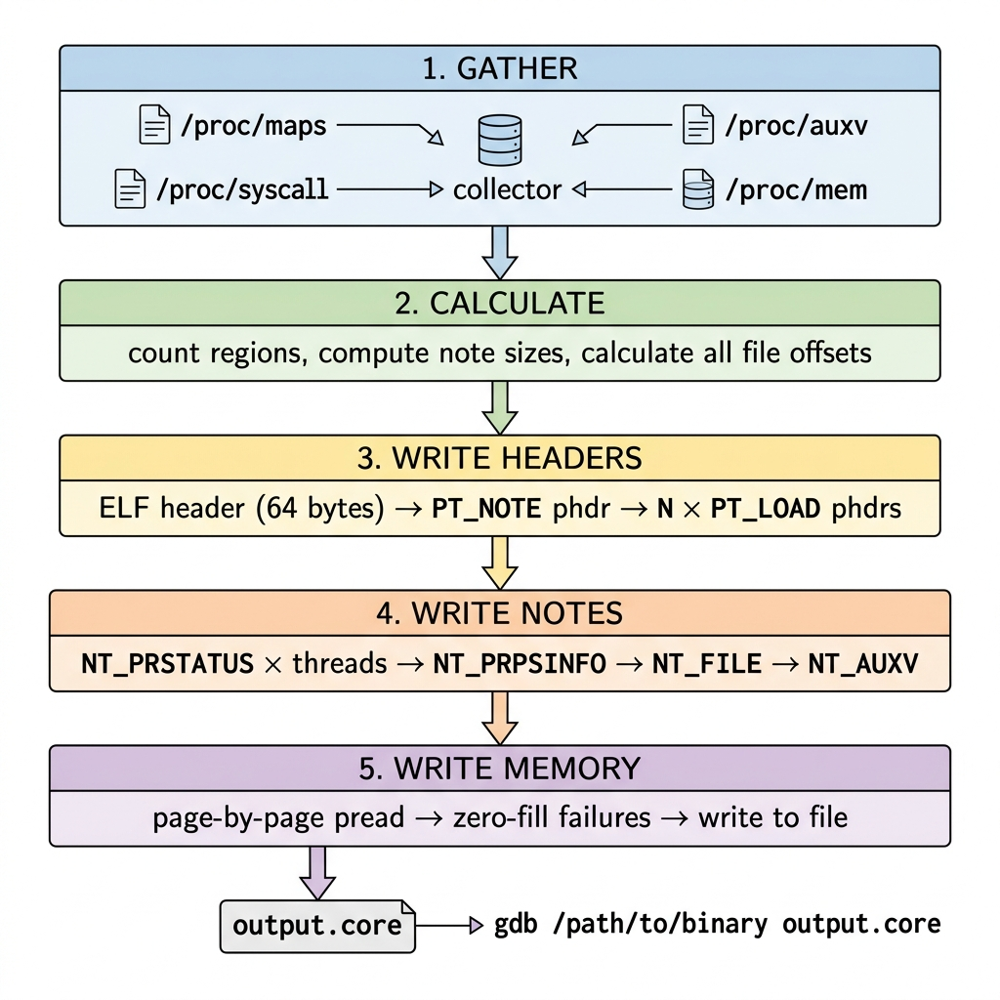

We've covered the theory. We know the ELF core dump format (Part 2) and where all the data comes from (Part 3). Now it's time to walk through the actual build_core() function — the 300-line orchestrator that takes raw /proc data and produces a file GDB can read.
This is also where we'll cover dump levels — the difference between a 500MB full dump and a 20MB standard dump that still gives you perfect backtraces.

The Five-Stage Pipeline
The core dump assembly happens in five stages, and the order is non-negotiable — every stage depends on calculations from the previous one:
Let's walk through each one.
Stage 1: Gather Everything
The function starts by collecting all the raw data from /proc:
int build_core(int pid, const char *output_path) {
printf("---- dcoredumper ----\n");
printf("Target PID: %d\n", pid);
printf("Output: %s\n", output_path);
printf("Architecture: x86_64\n");
printf("Dump level: %s\n",
g_level == DUMP_STANDARD ? "standard" : "full");Then four data-gathering calls:
// 1. Memory map — what's loaded where
mem_region_t *regions = NULL;
int num_regions = parse_maps(pid, ®ions);
// 2. Open /proc/pid/mem for raw memory access
int mem_fd = open("/proc/<pid>/mem", O_RDONLY);
// 3. Thread registers — RSP + RIP for every thread
thread_info_t *threads = NULL;
int num_threads = enumerate_threads(pid, &threads);
// 4. Auxiliary vector — kernel metadata
char *auxv_data = NULL;
size_t auxv_sz = 0;
read_auxv(pid, &auxv_data, &auxv_sz);At this point, we also do RBP recovery for each thread. This is the heuristic from Part 3 — scanning the stack for frame pointer chains:
for (int i = 0; i < num_threads; i++) {
unsigned long rsp = threads[i].regs[X86_64_REG_RSP];
// If RSP is set but RBP is missing, try to recover it
if (rsp != 0 && threads[i].regs[X86_64_REG_RBP] == 0) {
unsigned long rbp = recover_rbp(mem_fd, rsp,
regions, num_regions);
if (rbp != 0) {
threads[i].regs[X86_64_REG_RBP] = rbp;
}
}
}We do this before writing anything because we need the final register values when we write NT_PRSTATUS later.
Stage 2: The Offset Arithmetic
This is the trickiest part. Every program header contains a file offset that must point to the exact right byte. If any offset is wrong by even one byte, GDB will read garbage.
First, count how many regions we'll actually dump:
int loadable = 0;
for (int i = 0; i < num_regions; i++) {
if (should_dump_region(®ions[i])) loadable++;
}Then calculate note section sizes:
// NT_PRSTATUS: one per thread
// Each note = 12-byte header + 8-byte name + padded descriptor
size_t per_prstatus = sizeof(Elf64_Nhdr) + 8 + NOTE_ALIGN(336);
size_t total_prstatus = per_prstatus * num_threads;
// NT_PRPSINFO: one per process
size_t prpsinfo_sz = sizeof(Elf64_Nhdr) + 8 + NOTE_ALIGN(136);
// NT_FILE: variable size (depends on number of file-backed regions)
uint64_t file_count = 0;
size_t strings_len = 0;
for (int i = 0; i < num_regions; i++) {
if (regions[i].name[0] == '/') {
file_count++;
strings_len += strlen(regions[i].name) + 1;
}
}
size_t file_desc_sz = 16 + (file_count * 24) + strings_len;
size_t file_note_sz = sizeof(Elf64_Nhdr) + 8 + NOTE_ALIGN(file_desc_sz);
// NT_AUXV: variable size
size_t auxv_note_sz = sizeof(Elf64_Nhdr) + 8 + NOTE_ALIGN(auxv_sz);
// Grand total
size_t all_notes_sz = total_prstatus + prpsinfo_sz
+ file_note_sz + auxv_note_sz;Now solve the offset chain:
// Program header table starts right after ELF header
size_t phdr_total = (1 + loadable) * sizeof(Elf64_Phdr);
// Notes start after all headers
size_t note_offset = sizeof(Elf64_Ehdr) + phdr_total;
// Memory data starts after all notes
size_t data_offset = note_offset + all_notes_sz;Here's how this looks visually:
Byte 0 → ELF header (64 bytes)
Byte 64 → Program headers ((1+N) × 56 bytes)
Byte 64 + phdr_total → NOTE segment starts
Byte 64 + phdr_total + notes_sz → First LOAD segment data startsEvery single one of these values must be computed before we write a single byte, because the program headers (written second) reference the note and data offsets (written later).
Stage 3: Write the Headers
Now we open the output file and start writing. First, the ELF header:
FILE *core = fopen(output_path, "wb");
Elf64_Ehdr ehdr;
memset(&ehdr, 0, sizeof(ehdr));
memcpy(ehdr.e_ident, ELFMAG, SELFMAG);
ehdr.e_ident[EI_CLASS] = ELFCLASS64;
ehdr.e_ident[EI_DATA] = ELFDATA2LSB;
ehdr.e_ident[EI_VERSION] = EV_CURRENT;
ehdr.e_ident[EI_OSABI] = ELFOSABI_LINUX;
ehdr.e_type = ET_CORE;
ehdr.e_machine = EM_X86_64;
ehdr.e_version = EV_CURRENT;
ehdr.e_phoff = sizeof(Elf64_Ehdr); // 64
ehdr.e_ehsize = sizeof(Elf64_Ehdr); // 64
ehdr.e_phentsize = sizeof(Elf64_Phdr); // 56
ehdr.e_phnum = 1 + loadable;
fwrite(&ehdr, sizeof(ehdr), 1, core);Then the PT_NOTE program header:
Elf64_Phdr note_phdr;
memset(¬e_phdr, 0, sizeof(note_phdr));
note_phdr.p_type = PT_NOTE;
note_phdr.p_offset = note_offset;
note_phdr.p_filesz = all_notes_sz;
fwrite(¬e_phdr, sizeof(note_phdr), 1, core);Then one PT_LOAD header per dumpable region, with a running offset counter:
size_t cur_offset = data_offset;
for (int i = 0; i < num_regions; i++) {
if (!should_dump_region(®ions[i])) continue;
size_t seg_size = regions[i].end - regions[i].start;
Elf64_Phdr phdr;
memset(&phdr, 0, sizeof(phdr));
phdr.p_type = PT_LOAD;
phdr.p_offset = cur_offset; // where in the file
phdr.p_vaddr = regions[i].start; // original virtual address
phdr.p_filesz = seg_size;
phdr.p_memsz = seg_size;
phdr.p_flags = PF_R;
if (regions[i].writable) phdr.p_flags |= PF_W;
if (regions[i].executable) phdr.p_flags |= PF_X;
phdr.p_align = PAGE_SIZE;
fwrite(&phdr, sizeof(phdr), 1, core);
cur_offset += seg_size; // advance for next region
}Notice how cur_offset accumulates. Each PT_LOAD header points to the next available file position. By the time we finish writing all headers, we know exactly where each region's data will land in the file.
Stage 4: Write the Notes
Now we're at the note offset. We write the four note types in order:
NT_PRSTATUS — One Per Thread
for (int i = 0; i < num_threads; i++) {
unsigned char *prstatus = calloc(1, 336);
// Thread ID at offset 32
*(pid_t *)(prstatus + 32) = (pid_t)threads[i].tid;
// All 27 registers at offset 112
memcpy(prstatus + 112,
threads[i].regs,
27 * sizeof(unsigned long));
write_note(core, 1 /* NT_PRSTATUS */, prstatus, 336);
free(prstatus);
}NT_PRPSINFO — Process Identity
unsigned char *prpsinfo = calloc(1, 136);
prpsinfo[0] = 2; // pr_state = TASK_UNINTERRUPTIBLE
prpsinfo[1] = 'D'; // pr_sname
*(pid_t *)(prpsinfo + 24) = (pid_t)pid;
// Read command line from /proc/pid/cmdline
// Extract basename for pr_fname (max 15 chars)
// Copy full cmdline for pr_psargs (max 80 chars)
write_note(core, 3 /* NT_PRPSINFO */, prpsinfo, 136);NT_FILE — File Mappings
This is the most complex note to construct. It has a custom binary format:
// Layout:
// uint64_t count — number of file entries
// uint64_t page_size — 4096
// count × { start, end, offset_in_pages }
// count × null-terminated filename strings
char *file_desc = calloc(1, file_desc_sz);
uint64_t *hdr = (uint64_t *)file_desc;
hdr[0] = file_count; // how many entries
hdr[1] = PAGE_SIZE; // page size
uint64_t *entries = &hdr[2];
char *strtab = (char *)&entries[file_count * 3];
int idx = 0;
char *sp = strtab;
for (int i = 0; i < num_regions; i++) {
if (regions[i].name[0] != '/') continue;
entries[idx * 3 + 0] = regions[i].start;
entries[idx * 3 + 1] = regions[i].end;
entries[idx * 3 + 2] = regions[i].offset / PAGE_SIZE;
strcpy(sp, regions[i].name);
sp += strlen(regions[i].name) + 1;
idx++;
}
write_note(core, 0x46494c45 /* NT_FILE */, file_desc, file_desc_sz);One subtlety: the n_type for NT_FILE is 0x46494c45, which is the ASCII encoding of "FILE". The kernel uses this as a magic number. Other note types use small integers (1 for PRSTATUS, 3 for PRPSINFO, 6 for AUXV).
NT_AUXV — Auxiliary Vector
The simplest note — just a raw blob:
if (auxv_data) {
write_note(core, 6 /* NT_AUXV */, auxv_data, auxv_sz);
}The write_note Helper
All four notes go through the same writer:
size_t write_note(FILE *out, uint32_t type,
const void *desc, size_t desc_sz) {
Elf64_Nhdr nhdr;
nhdr.n_namesz = 5; // "CORE\0"
nhdr.n_descsz = desc_sz;
nhdr.n_type = type;
char name_padded[8] = {'C','O','R','E','\0','\0','\0','\0'};
fwrite(&nhdr, sizeof(nhdr), 1, out); // 12 bytes
fwrite(name_padded, 8, 1, out); // 8 bytes (padded to 4)
fwrite(desc, desc_sz, 1, out); // descriptor
// Pad descriptor to 4-byte boundary
size_t pad = NOTE_ALIGN(desc_sz) - desc_sz;
if (pad > 0) {
char zeros[4] = {0};
fwrite(zeros, pad, 1, out);
}
return sizeof(nhdr) + 8 + NOTE_ALIGN(desc_sz);
}The name is always "CORE\0" padded to 8 bytes (4-byte aligned with 3 extra null bytes). The descriptor is padded to the next 4-byte boundary. This alignment is mandated by the ELF spec — violate it and GDB can't parse the notes.
Stage 5: Write the Memory
Now the bulk of the file — the actual memory contents. This is where dump levels make a real difference.
The Dump Loop
for (int i = 0; i < num_regions; i++) {
if (!should_dump_region(®ions[i])) continue;
size_t seg_size = regions[i].end - regions[i].start;
unsigned long addr = regions[i].start;
size_t rem = seg_size;
while (rem > 0) {
size_t chunk = rem > PAGE_SIZE ? PAGE_SIZE : rem;
ssize_t n = pread(mem_fd, buf, chunk, (off_t)addr);
if (n <= 0) {
// Guard page or read error — zero-fill
memset(buf, 0, chunk);
fwrite(buf, chunk, 1, core);
} else {
fwrite(buf, n, 1, core);
if ((size_t)n < chunk) {
// Short read — pad the remainder
size_t shortfall = chunk - n;
memset(buf, 0, shortfall);
fwrite(buf, shortfall, 1, core);
}
}
addr += chunk;
rem -= chunk;
}
}Three cases handled:
- Full read (
n == chunk): write the data directly - Short read (
0 < n < chunk): write what we got + zero-pad the rest - Failed read (
n <= 0): zero-fill the entire page
The short read case is important — it can happen at the boundary of mapped memory. Without handling it, we'd write fewer bytes than the PT_LOAD header promises, and GDB would misalign every subsequent region.
Dump Levels: Standard vs Full
Here's where practical engineering meets the ELF spec. A typical cvmfs2 process has hundreds of memory regions — libc, libpthread, libcurl, libssl, the FUSE libraries, and dozens more. Dumping every byte produces a core file that can be 500MB or more.
But GDB doesn't actually need most of that data. It can reload shared library .text sections from the original files on disk, as long as NT_FILE tells it where to find them.
Standard Mode (Default)
case DUMP_STANDARD:
// Always keep the dynamic linker
if (strstr(r->name, "/ld-linux") ||
strstr(r->name, "/ld-musl") ||
strstr(r->name, "/ld.so"))
return 1;
// Always keep the main executable
if (g_exe_path[0] && strcmp(r->name, g_exe_path) == 0)
return 1;
// Skip read-only file-backed regions of shared libraries
if (r->name[0] == '/' && !r->writable)
return 0;
// Keep everything else
return 1;What gets skipped:
- Read-only
.textand.rodatasegments of shared libraries (libc, libcurl, etc.) - These are often 100-300MB combined
What gets kept:
- The main executable — always, because GDB reads symbols from it
- The dynamic linker (
ld-linux.so) — always, because GDB needs itsr_debugstructure to discover all loaded libraries - Writable regions (
.data,.bss, heap, stack) — where the actual runtime state lives - Anonymous mappings — thread stacks, mmap'd buffers
[vdso]— the virtual dynamic shared object
The Size Difference
For a typical cvmfs2 process with 30 loaded shared libraries:
| Mode | Core Size | Backtrace Quality |
|---|---|---|
| Standard | ~15-30 MB | Full backtraces (GDB reloads .text from disk) |
| Full | ~300-500 MB | Full backtraces + hex dump of all memory |
Standard mode is the default because 95% of the time, you just want the backtrace. The writable memory (stack, heap, globals) is where all the interesting runtime state lives anyway.
Why Keep the Dynamic Linker?
This is a subtle but critical detail. GDB discovers loaded shared libraries by reading a chain of data structures that starts in the dynamic linker's memory:
ld-linux.so → _DYNAMIC → DT_DEBUG → r_debug → link_map chain
↓
lib1.so → lib2.so → lib3.so → ...If we skip ld-linux.so's writable region, GDB can't find this chain, and it won't know about any shared libraries. The entire info sharedlibrary output would be empty, and symbol resolution would fail for everything except the main executable.
So even in standard mode, ld-linux.so is always fully dumped.
The Summary — What the User Sees
After writing everything, the tool exits silently on success. Here's what a real run looks like — two tests from the actual vagrant session:
Test 1: cvmfs2 daemon (complex, 14 threads)
[vagrant@arch D-state-debugger]$ ps aux | grep cvmfs2
cvmfs 1323 1.3 0.6 657440 50648 ? Sl 17:36 0:00 /usr/bin/cvmfs2 -o rw,system_mount,... alice.cern.ch /cvmfs/alice.cern.ch
[vagrant@arch D-state-debugger]$ sudo ./Dcoredumper 1323 /tmp/cvmfs.core
Memory regions: 511
Threads: 14
TID 1323 RIP=0x00007ff49c29fff2 RSP=0x00007ffdfb8be668 RBP recovered: 0x00007ffdfb8be690 (chain depth: 8)
TID 1324 RIP=0x00007ff49c29fff2 RSP=0x00007ff498ffed38 RBP recovered: 0x00007ff498ffed60 (chain depth: 5)
TID 1325 RIP=0x00007ff49c29fff2 RSP=0x00007ff4987fdc58 RBP recovered: 0x00007ff4987fdca0 (chain depth: 4)
...
TID 1346 RIP=0x00007ff49c29405e RSP=0x00007ff48dff8b80 RBP recovered: 0x00007ff48dff8bb0 (chain depth: 13)
Core dump successfully saved to /tmp/cvmfs.coreTest 2: tree (simple, 1 thread, clearly D-state)
[vagrant@arch D-state-debugger]$ ps aux | grep D
vagrant 1344 0.0 0.0 5980 4228 pts/1 D+ 17:36 0:00 tree /cvmfs/alice.cern.ch
[vagrant@arch D-state-debugger]$ sudo ./Dcoredumper 1344 /tmp/tree.core
Memory regions: 27
Threads: 1
TID 1344 RIP=0x00007f808830a95e RSP=0x00007ffd67909e58 RBP recovered: 0x00007ffd6790a080 (chain depth: 8)
Core dump successfully saved to /tmp/tree.coreLoading It in GDB — The Moment of Truth
Here's the full real GDB session from the vagrant test. First the simple case — tree — which gives a clean, readable backtrace:
[vagrant@arch D-state-debugger]$ gdb /usr/bin/tree /tmp/tree.core
Reading symbols from /usr/bin/tree...
Reading symbols from /home/vagrant/.cache/debuginfod_client/.../debuginfo...
Core was generated by `/usr/bin/tree /cvmfs/alice.cern.ch'.
[Thread debugging using libthread_db enabled]
[New LWP 1344]
#0 __GI___fstatat64 (fd=-100,
file=0x55d743d505a0 "/cvmfs/alice.cern.ch/containers/fs/singularity/compat_el9-x86_64",
buf=0x7ffd67909f20, flag=0)
at ../sysdeps/unix/sysv/linux/fstatat64.c:159
(gdb) thread apply all bt
Thread 1 (Thread 0x7f8088484740 (LWP 1344)):
#0 __GI___fstatat64 (fd=-100,
file=0x55d743d505a0 "/cvmfs/alice.cern.ch/containers/fs/singularity/compat_el9-x86_64",
buf=0x7ffd67909f20, flag=0)
at ../sysdeps/unix/sysv/linux/fstatat64.c:159
#1 0x000055d718d30d98 in getinfo (name=0x0, path=0x0)
at /usr/src/debug/tree/unix-tree-2.3.2/tree.c:860
#2 0x000055d718d344eb in listdir (dirname=..., lev=3, dev=51)
at /usr/src/debug/tree/unix-tree-2.3.2/list.c:242
#3 0x000055d718d34133 in listdir (dirname=..., lev=2, dev=51)
at /usr/src/debug/tree/unix-tree-2.3.2/list.c:264
#4 0x000055d718d34133 in listdir (dirname=..., lev=1, dev=51)
at /usr/src/debug/tree/unix-tree-2.3.2/list.c:264
#5 0x000055d718d349f2 in emit_tree (dirname=...)
at /usr/src/debug/tree/unix-tree-2.3.2/list.c:114
#6 0x000055d718d29649 in main (argc=..., argv=...)
at /usr/src/debug/tree/unix-tree-2.3.2/tree.c:624There it is. The tree process is stuck in fstatat64 trying to stat a path inside /cvmfs/alice.cern.ch/containers/fs/singularity/. A CVMFS FUSE lookup that never returned — exactly what we expected.
Now the full cvmfs2 daemon backtrace — 14 threads, the key one is Thread 14:
[vagrant@arch D-state-debugger]$ gdb /usr/bin/cvmfs2 /tmp/cvmfs.core
Reading symbols from /usr/bin/cvmfs2...
Reading symbols from /usr/lib/debug/usr/bin/cvmfs2.debug...
[New LWP 1323]
...
[New LWP 1346]
Core was generated by `/usr/bin/cvmfs2 -o rw,system_mount,...'.
#0 __syscall_cancel_arch () at ../sysdeps/unix/sysv/linux/x86_64/syscall_cancel.S:56
[Current thread is 1 (Thread 0x7ff49c97b780 (LWP 1323))]
(gdb) thread apply all bt
Thread 14 (Thread 0x7ff48dffb6c0 (LWP 1346)):
#0 __internal_syscall_cancel (...) at cancellation.c:44
#1 __pthread_cond_wait_common (cond=..., mutex=...) at pthread_cond_wait.c:421
#2 ___pthread_cond_wait (...) at pthread_cond_wait.c:453
#3 Tube<download::DataTubeElement>::PopFront (this=0x7ff47811faa0)
at .../cvmfs/util/tube.h:125
#4 download::DownloadManager::Fetch (this=..., info=...)
at .../cvmfs/network/download.cc:2045
#5 cvmfs::Fetcher::Fetch (this=..., object=..., alt_url=...)
at .../cvmfs/fetch.cc:177
#6 catalog::ClientCatalogManager::StageNestedCatalogByHash (...)
at .../cvmfs/catalog_mgr_client.cc:379
#7 catalog::AbstractCatalogManager::StageNestedCatalogAndUnlock (...)
at .../cvmfs/catalog_mgr_impl.h:865
#8 catalog::AbstractCatalogManager::LookupPath (...)
at .../cvmfs/catalog_mgr_impl.h:287
#9 cvmfs::GetDirentForPath (path=...) at .../cvmfs/cvmfs.cc:428
#10 cvmfs::cvmfs_lookup (req=..., parent=55380, name=0x... "alma9-alice-20260427_2")
at .../cvmfs/cvmfs.cc:580
#11 loader::stub_lookup (...) at .../cvmfs/loader.cc:217
#12 ?? () from /usr/lib/libfuse3.so.4
...
Thread 1 (Thread 0x7ff49c97b780 (LWP 1323)):
#0 __syscall_cancel_arch () at syscall_cancel.S:56
...
#7 fuse_session_loop_mt_312 () from /usr/lib/libfuse3.so.4
#8 FuseMain (argc=..., argv=...) at .../cvmfs/loader.cc:1220
#9 main (argc=5, argv=...) at .../cvmfs/fuse_main.cc:145The exact call chain: FUSE lookup → catalog manager → download manager → blocking PopFront() on a tube waiting for a download that never completes. The process is stuck waiting on alma9-alice-20260427_2 — a nested catalog fetch that stalled.
The "Core was generated by..." line comes from our NT_PRPSINFO. The thread list comes from per-thread NT_PRSTATUS notes. The function names come from GDB reading the original binary referenced by our NT_FILE note. Everything from Parts 1–3 comes together in this output.
Error Handling Philosophy
One design decision worth calling out: the tool is aggressively fault-tolerant. We never abort on partial failures:
| Failure | Response |
|---|---|
| Can't read a thread's registers | Include thread with zeroed registers + print warning |
| Thread is running (not in syscall) | Include thread + note "registers unavailable" |
| RBP recovery finds nothing | Leave RBP as 0 (GDB falls back to DWARF unwinding) |
| Memory page read fails | Zero-fill the page and continue |
| Short memory read | Pad with zeros to maintain offsets |
| Can't read auxv | Skip NT_AUXV (GDB works without it, just less accurately) |
The philosophy is: a partial core dump is infinitely better than no core dump. When you're staring at a frozen production node that needs a reboot, you want whatever diagnostic data you can get, even if some threads have incomplete register state.
In Part 5, we'll zoom out from the code and tell the full CVMFS story — the actual bug this tool was built to diagnose, what the backtraces revealed, and how the tool integrates into the CVMFS ecosystem.
Final Implementation PR: cvmfs/cvmfs#4314